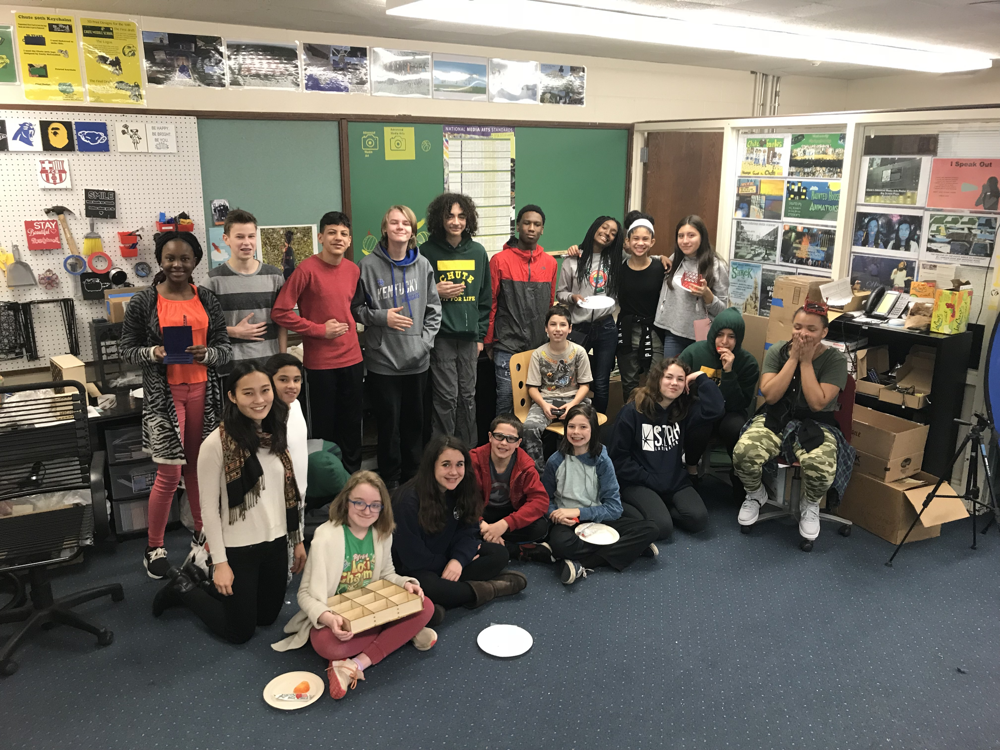

IMR (Imagine, Make, Repeat)

IMR (Imagine, Make, Repeat) works with educators to plan and implement Makerspace technologies and projects in classrooms and Makerspaces throughout Evanston and Chicago. IMR has appeared at STEMFest, YEA! festival, and has collaborated with Chute Middle School, MetaMedia at the Evanston YMCA, and the Evanston Public Library. Going forward, the IMR team looks to further develop and expand partnerships with educators and making communities across the Chicagoland area.
Linked Speaker Events
Making Sense of Multimodal Learning Analytics
READMMLA: Centering Inclusivity in Data Science
Teddy Talks: Marcelo Worsley